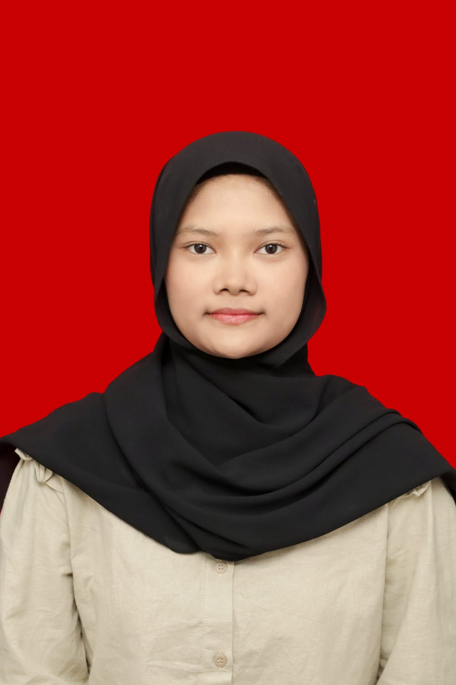

Profil Saya

Zuleyka Aurelia Maharani
Mahasiswa Informatika
Biodata Pribadi
Nama Lengkap: Zuleyka Aurelia Maharani
Tempat, Tanggal Lahir: Bekasi, 11 Juli 2007
Jenis Kelamin: Perempuan
Agama: Islam
Alamat: Bandung, Jawa Barat
Status: Mahasiswa
Program Studi: Informatika
Riwayat Pendidikan
- SD Negeri 39 Kota Pontianak (2013–2019)
- SMP Negeri 21 Bekasi (2019–2022)
- SMA BPI 1 Bandung (2022–2025)
- Institut Teknologi Nasional Bandung, Informatika (2025–Sekarang)
Pengalaman
- Mengikuti kegiatan perkuliahan dan praktikum.
- Aktif dalam kegiatan himpunan mahasiswa.
- Mengerjakan tugas dan proyek yang berkaitan dengan teknologi informasi.
Kontak
Email: zuleyka.aurelia@mhs.itenas.ac.id
LinkedIn: Zuleyka Aurelia
Instagram: @zuleykaaurelia
TikTok: @iykenapaa
Terima Kasih
Terima kasih telah mengunjungi profil saya.
© 152025015 Zuleyka Aurelia Maharanip>